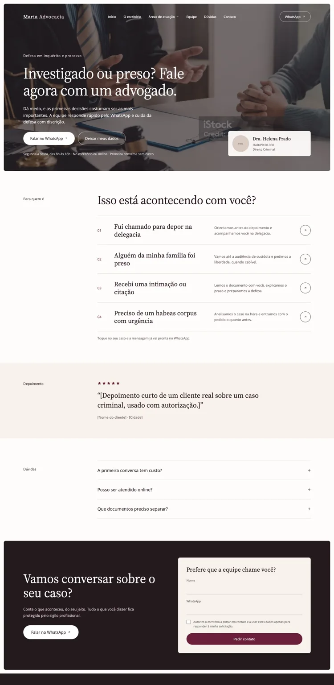
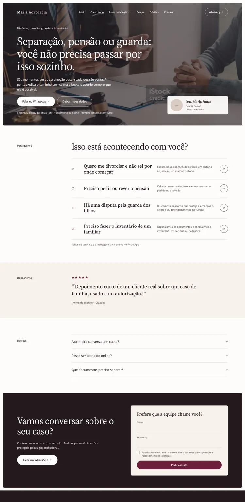

Sou profissional de Administração com experiência em e-commerce e marketing, atuando na gestão de plataformas, análise de desempenho, acompanhamento de KPIs e construção de materiais digitais. Gosto de transformar informações dispersas em visões claras para apoiar decisões.
Portfólio profissional · Marketing, dados & digital
Transformo dados e ideias em decisões e experiências.
Atuação entre Business Intelligence, marketing digital, performance e operações de e-commerce — conectando indicadores, comunicação e objetivos de negócio.
Projetos práticos em diferentes segmentos: varejo de moda, supermercado e serviços jurídicos. Uma visão que combina análise, organização e experiência digital.
01 / Sobre
Visão analítica com olhar de negócio.
Experiência em rotinas de e-commerce, acompanhamento de indicadores, campanhas e melhoria de processos.
Meu trabalho transita entre o operacional e o estratégico: entender o que os números mostram, organizar processos e apresentar informações de forma objetiva para diferentes áreas.
Business IntelligenceE-commerceMarketing digitalPerformanceAnálise de dados
02 / Business Intelligence
Dados que ajudam a enxergar o todo.
Dashboards desenvolvidos no Looker Studio para acompanhar indicadores, identificar oportunidades e apoiar a gestão.
CASE 01
Moda · Performance e vendas
Painel para acompanhar tráfego pago, CRM, vendas e evolução dos resultados, conectando ações de marketing ao desempenho comercial.
Abrir dashboard ↗
Looker Studio · Marketing & vendas
CASE 02
Supermercado · Operação de marketplace
Visão de vendas, pedidos, entregas e ocorrências operacionais, incluindo problemas de entrega e itens em falta.
Abrir dashboard ↗
Looker Studio · Operações
CASE 03
Advocacia · Mídia e conversão
Painel para acompanhar mídia paga, conversões e resultados por área de atuação, permitindo observar a contribuição de cada frente.
Abrir dashboard ↗
Looker Studio · Aquisição & conversão
Clique em um painel para explorá-lo aqui mesmo, ou use “Abrir dashboard” para vê-lo em uma nova aba.
03 / Experiências digitais
Landing pages pensadas para cada público.
Um projeto para escritório de advocacia com cinco páginas segmentadas por área de atuação, apresentadas em versões desktop e mobile.
As páginas seguem uma estrutura orientada à conversão: proposta de valor, identificação das necessidades do público, chamadas para contato via WhatsApp, depoimentos, dúvidas frequentes e formulário de contato. O conjunto demonstra organização de conteúdo e adaptação responsiva entre telas.
01
Criminal e Previdenciário


02
Família


03
Tributário
04
Renegociação de dívidas
04 / Competências
Ferramentas e frentes de atuação.
Dados & indicadores
Looker Studio, Power BI (básico), Excel, KPIs, análise de desempenho e relatórios gerenciais.
Marketing & performance
Meta Ads, Google Analytics, CRM, mídia paga, SEO, campanhas e acompanhamento de conversão.
E-commerce & operação
Shopify, TOTVS, gestão de catálogo, coleções, pedidos, trocas, devoluções e rotinas omnichannel.
Conteúdo & criação
Briefings, direção criativa, roteiros, social media, Canva, Photoshop e Illustrator.
Gestão & processos
Administração, melhoria contínua, indicadores operacionais e organização de processos.
Experiência digital
Estruturação de páginas, comunicação segmentada, hierarquia de informação e experiência responsiva.
Vamos conversar
Tem um projeto ou oportunidade?
Tem um projeto em mente ou busca um profissional para sua equipe? Vamos conversar pelo WhatsApp.